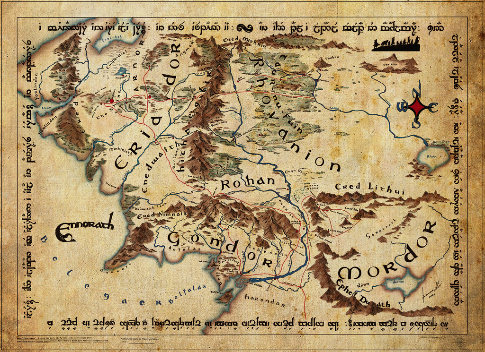
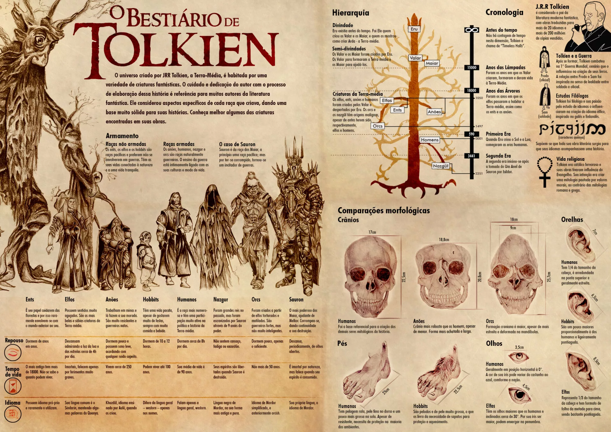
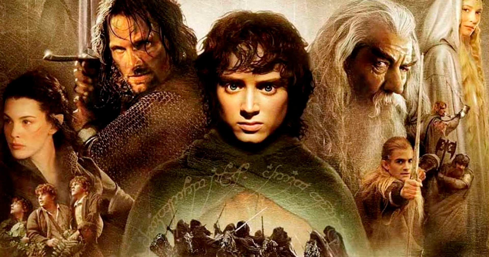

Introdução
Terra Média é a terra antiga e fictícia de J. R. R. Tolkien, onde a maioria dos contos do seu imaginário ocorrem. Terra Média é a tradução literal do termo anglo-saxão middangeard, referindo-se a este mundo, o reino dos humanos. Tolkien traduziu "Terra-média" como Endor (algumas vezes Endórë) e Ennor nas línguas élficas quenya e sindarin.
Apesar de o cenário da Terra Média ser geralmente considerado outro mundo, é na realidade um período imaginário do passado da nossa própria Terra. Tolkien insistiu que a Terra Média é a nossa Terra em várias das suas cartas, sendo que na carta 211 ele estima que a Terceira Era teria terminado 600 mil anos antes do nosso próprio tempo. A ação nos livros é bastante restrita ao noroeste do continente, correspondendo à atual Europa, e pouco é conhecido sobre o leste e sul da Terra Média. A história da Terra Média está dividida em várias Eras: O Hobbit e O Senhor dos Anéis lidam exclusivamente com eventos relacionados com o fim da Terceira Era, enquanto que O Silmarillion trata principalmente da Primeira Era. O seu mundo era originalmente plano mas foi tornado redondo perto do fim da Segunda Era por Eru Ilúvatar, o Criador.
Muito do nosso conhecimento da Terra Média é baseado em escritos que Tolkien não acabou para publicação durante a sua vida. Nestes casos, este artigo é baseado na versão do imaginário que é considerado canônico pela maioria de fãs de Tolkien, tal como discutido no canôn da Terra Média.

Etimologia
O termo "Terra Média" ("Middle-earth" em inglês) não foi inventado por Tolkien. Ele já existia no anglo-saxão como middanġeard e no inglês médio como midden-erd ou middel-erd e em norueguês antigo como Midgard. É em inglês aquilo que os Gregos chamaram o οικουμένη (oikoumenē) ou "o local permanente dos homens", o mundo físico como oposto dos mundos invisíveis (As Cartas de J. R. R. Tolkien, 151). A palavra Mediterrâneo provém de duas raízes latinas, medi, meio, e terra.
Middangeard é citada meia-dúzia de vezes em Beowulf, o qual Tolkien traduziu e sobre cujo estudo ele era possivelmente a maior autoridade mundial. (Ver também J. R. R. Tolkien para discussão das suas inspirações e fontes). Ver Midgard e Mitologia Nórdica para o uso mais antigo.
Tolkien também foi inspirado por este fragmento:
Eala earendel engla beorhtast / ofer middangeard monnum sended. Avé Earendel, o mais brilhante dos anjos / acima da Terra Média enviado para os homens. do poema Crist de Cynewulf. O nome earendel (que pode significar a 'estrela da manhã' mas em alguns contextos era um nome para Cristo) foi a inspiração para personagem o marinheiro de Tolkien, Eärendil.
O nome foi conscientemente usado por Tolkien a partir do início da década 30 para estabelecer O Hobbit, O Senhor dos Anéis, O Silmarillion, e escritos relacionados, gradualmente substituindo as antigas expressões Terras Exteriores e Terras Grandes, que designavam os mesmos lugares. O termo "Terra-média" é especificamente usado para designar as terra ao leste do Grande Mar (Belegaer), excluindo Aman mas incluindo Harad e outras terras mortais não descritas por Tolkien.
Geografia
J. R. R. Tolkien nunca finalizou a geografia de todo o mundo associado a O Hobbit e a O Senhor dos Anéis. Em The Shaping of Middle-earth, volume IV da História da Terra Média, Christopher Tolkien publicou vários mapas de referência, tanto da original terra plana como do mundo redondo, que seu pai tinha criado no final dos anos 30. Karen Wynn Fonstad partiu desses mapas para desenvolver detalhados "mapas do mundo inteiro", apesar de não-canônicos, que refletiam um mundo consistente com as eras históricas retratadas em O Silmarillion, O Hobbit, e O Senhor dos Anéis.
Endor, o termo "quenya" para Terra Média, foi concebido originalmente como se ajustando a um esquema grandemente simétrico, desfigurado pela ambição de Melkor de ser o único criador. A simetria era definida por dois grandes sub-continentes, um no norte e outro no sul, com cada um deles com duas longas cadeias de montanhas nas regiões a este e a oeste. Foram dados às cadeias montanhosas nomes baseados nas cores (Montanhas Brancas, Montanhas Azuis, Montanhas Cinzentas e Montanhas Vermelhas).
Os vários conflitos com Melkor resultaram na distorção das formas das terras. Originalmente, havia apenas um corpo de água interior, no meio do qual estava situada a ilha de Almaren,onde viviam os Valar. Quando Melkor destruiu as lâmpadas dos Valar, que iluminavam o mundo, foram criados dois vastos mares, mas Almaren e o seu lago foram destruídos nas grandes ondas causadas pela destruição. O mar setentrional tornou-se o Mar de Helcar (Helkar). As terras a leste das Montanhas Azuis tornaram-se em Beleriand (que significa "a terra dos Valar"). Melkor ergueu as Montanhas Nebulosas para impedir o progresso do Vala Oromë, na caça deste às bestas de Melkor durante o período de escuridão que antecedeu o despertar dos Elfos.
As lutas violentas durante a Guerra da Ira entre a Hoste dos Valar e os exércitos de Melkor, no final da Primeira Era, trouxeram a destruição de Beleriand. Também é possível que, durante este período, o mar interior de Helcar tenha sido escoado.
O mundo, não incluindo os corpos celestiais, foram identificados por Tolkien como "Ambar" em vários textos, mas foi igualmente identificado como "Imbar", o Habitat, em textos pós Senhor dos Anéis. Do período da destruição das duas lampadas até ao período da queda de Númenor, Ambar era suposto ser um "mundo plano", no qual os seus territórios habitáveis fossem organizados numa parte do mundo. Um continente a Oeste, Aman, fora a casa de Valar. As terras médias (centrais), Endor, foram chamadas de "Terra-média" e o local de grande parte das histórias de Tolkien. A parte oriental do continente era habitado por homens que não vieram para o oeste mas pouco foi descrito pelo autor.
Quando Melkor envenenou as Duas Árvores dos Valar e fugiu de Aman de volta para Endor, os Valar criaram o Sol e a Lua, que eram corpos separados (de Ambar), mas fazendo parte de Arda (o reino das Crianças de Ilúvatar). Alguns anos após a publicação de "O Senhor dos Anéis", em uma nota associada à narrativa original "Athrabeth Finrod ah Andreth" (na qual é dito que ocorreu em Beleriand durante a Guerra das Jóias), Tolkien igualou Arda ao Sistema Solar; porque Arda consistia mais do que um corpo criado por um deus.
De acordo com os registos em O Silmarillion e em O Senhor dos Anéis, quando Ar-Pharazôn invadiu Aman à procura da imortalidade dos Valar, eles descuidaram-se na protecção do mundo conduzindo à intervenção de Ilúvatar, destruindo Númenor, removendo Aman "dos círculos do mundo", e moldando Ambar à forma redonda do mundo actual. Akallabêth diz que os numenorianos que sobreviveram à Queda do seu mundo navegaram para Oeste à procura da sua casa antiga, mas as suas viagens apenas os conduziram à volta do mundo, conduzindo-os ao ponto de partida. Assim, antes do fim da Segunda Era, a transição de uma "Terra Plana" para "Terra redonda" havia terminado.
O continente de Endor tornou-se aproximadamente o equivalente à Eurásia, mas a geografia ficcional de Tolkien não fornece correlações exactas entre a narrativa de O Senhor dos Anéis e o território da Europa ou até mesmo territórios vizinhos. Pode-se assim assumir que o leitor compreende o mundo implícito à subsequente não documentada transformação (Que alguns especulam que Tolkien teria equiparado com o dilúvio bíblico) em algum tempo após o fim da Terceira Era.
Povos
A Terra Média é o lar de várias espécies inteligentes. Primeiro estão os Ainur, seres angelicais criados por Ilúvatar. Os Ainur ajudaram Ilúvatar a criar Arda no mito cosmológico chamado "Ainulindalë", ou "Música dos Ainur". Alguns dos Ainur entraram posteriormente em Arda, e os maiores destes são chamados de Valar. Melkor (posteriormente chamado "Morgoth"), a representação do mal na Terra Média, era inicialmente um deles.
Os Ainur inferiores que entraram em Arda são chamados de Maiar. Na Primeira Era, o principal exemplo é Melian, esposa do Rei Élfico Thingol; na Terceira Era, os Maiar estão representados pelos Istari (a quem os Homens chamam Magos), incluindo Gandalf, Saruman e Radagast. Também havia Maiar maléficos, incluindo os Balrogs e o Senhor das Trevas Sauron.
Mais tarde vieram os filhos de Ilúvatar: Elfos e Homens, seres inteligentes criados unicamente por Ilúvatar. Em O Silmarillion, passado na Primeira Era e mesmo antes, muito é dito acerca dos Elfos, os Primogênitos, em sua glória, mas os Homens aparecem perto do fim.
Dos descendentes dos Homens Fiéis aos Eldar e das Três Casas dos Edain se trata na história da Queda de Númenor, ocorrida na Segunda Era. Os seus herdeiros na Terceira Era são os Homens de Arnor e de Gondor que aparecem n'O Senhor dos Anéis. Os Hobbits são descritos como uma derivação dos Homens.
Os Anões têm uma posição especial nas lendas, uma vez que não foram criados por Ilúvatar, mas por um dos Valar, de nome Aulë. Contudo, Aulë ofereceu as suas criações a Ilúvatar, que adota os Anões e lhes dá vida e vontade próprias. Os Ents, pastores das árvores, são criados por Ilúvatar a pedido de Yavanna, para equilibrar com os Anões.
Os Orcs e os Trolls são criaturas maléficas criadas por Morgoth; não são criações originais, mas antes imitações dos Elfos e dos Ents. A sua origem definitiva é incerta, mas pelo menos alguns deles foram criados a partir de Elfos e Homens corruptos.
Aparentemente, aparecem também alguns animais sábios, tal como as Águias, Huan o Grande Cão de Caça de Valinor, e os Wargs. As Águias são criadas por Ilúvatar juntamente com os Ents, mas de modo geral, a origem e natureza destes animais não são claras. Alguns deles poderão ser Maiar em forma de animal, ou talvez os filhos de Maiar e animais normais.
Também em O Hobbit e O Senhor dos Anéis há menção dos Beornings, que seriam uma espécie de humanos com poderes de transformarem-se em ursos (troca-peles) e lobisomens, e homens-dragões gigantes e muitas outras espécies que receberam breves e obscuros comentários nas obras.

Línguas
Originalmente, Tolkien começou a escrever O Silmarillion como uma derivação dos seus projectos de construção de linguagens. Delineou duas línguas élficas principais, que mais tarde ficariam conhecidas por Quenya, falada pelos Vanyar, pelos Noldor e alguns Teleri, e o Sindarin, falada pelos Elfos que permaneceram em Beleriand (ver abaixo). Estas línguas estavam relacionadas, e considera-se que sejam um postulado da forma ancestral de ambas, o eldarin comum.
Outros idiomas do mundo incluem:
- Língua Negra - concebida por Sauron para seus escravos.
- Khuzdul - falada pelos Anões
- Adûnaic - falada pelos numenorianos.
- Rohirric - falado pelos Rohirrim - representado n'O Senhor dos Anéis pelo inglês antigo.
- Westron - o 'Idioma Comum' - representado pela língua inglesa.
- Valarin - a linguagem dos Ainur.
- Entês - falada pelos ents.
- Orkish - a língua proíbida de Mordor
Filmes e Séries
Em carta a Christopher Tolkien, J. R. R. Tolkien desistiu de sua política de não adaptação de seus trabalhos para o cinema: "Dinheiro ou arte". Ele vendeu os direitos de O Hobbit e O Senhor dos Anéis para a United Artists em 1969 depois de ser surpreendido por um inesperado imposto. Estes direitos estão atualmente nas mãos de Tolkien Enterprises, que não tem relação com a Tolkien Estate, aqual mantém os direitos de O Silmarillion e de outras obras.
A primeira adaptação para cinema foi O Hobbit em 1977, criada nos estúdios Rankin-Bass. Foi inicialmente exibido na televisão dos EUA.
No ano seguinte (1978), um filme intitulado O Senhor dos Anéis foi lançado, produzido e dirigido por Ralph Bakshi; foi uma adapatação da primeira metade da história, usando animação de rotoscopia. Apesar de relativamente fiel a história, foi mais um sucesso comercial que crítico, e acabou não tendo uma continuação.
Em 1980, os Rankin-Bass produziram um especial de TV cobrindo a última metade de O Senhor dos Anéis, que foi chamado de O Retorno do Rei. No entanto, o filme não seguiu diretamente o fim do filme de Bakshi.
Planos para um filme com atores esperaram até final dos anos 90 para ser executados, quando a New Line Cinema resolveu financiar o projeto do diretor Peter Jackson para adaptar O Senhor dos Anéis em uma trilogia de filmes. Lançados entre 2001 e 2003, os filmes foram um enorme sucesso comercial e crítico e juntos somaram 17 Óscars.
Após o sucesso da trilogia, uma adaptação de O Hobbit tornou-se muito esperada. Em setembro de 2006, o estúdio Metro-Goldwyn-Mayer - que herdara os direitos ao comprar a United Artists - expressou interesse em se unir a Jackson e a New Line para fazer filmes baseados no livro. Processos contra a New Line por parte de Jackson e da família de Tolkien, bem como a falência da MGM, atrasaram a produção, e fizeram o diretor Guillermo Del Toro a desistir de conduzir os filmes, ficando apenas como produtor e roteirista. Em 2010, Jackson concordou em adaptar O Hobbit em uma série de filmes - originalmente em duas partes, depois aumentado para três.
A Amazon comprou os direitos televisivos de O Senhor dos Anéis por 250 milhões de dólares em novembro de 2017, assumindo um compromisso de produção de cinco temporadas no valor de pelo menos 1 bilhão de dólares. Isso a tornaria a série de televisão mais cara de todos os tempos. Payne e McKay foram contratados para desenvolver a série em julho de 2018, com o resto da equipe criativa confirmada um ano depois. A seleção aconteceu em todo o mundo, com Robert Aramayo liderando um grande elenco. As filmagens começaram em fevereiro de 2020 em Auckland, Nova Zelândia, depois que negociações entre a Amazon e o governo da Nova Zelândia garantiram que a série pudesse ser produzida no país onde a trilogia de filmes foi feita. A produção foi suspensa em março devido à pandemia de COVID-19, mas foi retomada em setembro.
A série se passa na Segunda Era da Terra-média antes dos acontecimentos do romance e dos filmes de O Senhor dos Anéis. A Amazon Studios é responsável pela produção em cooperação com a Tolkien Estate, Tolkien Trust, HarperCollins e New Line Cinema. Payne e McKay atuam como os showrunners do projeto.
A primeira temporada de oito episódios estreou no Prime Video em 1 de setembro de 2022. A série recebeu resenhas geralmente positivas da crítica, com elogios particularmente para a sua cinematografia, visual e trilha sonora, mas algumas críticas foram direcionadas ao ritmo e caracterização. Uma segunda temporada foi formalmente encomendada em novembro de 2019.

| Ano | Título original | Título no Brasil | Obs |
|---|---|---|---|
| 1977 | The Hobbit | O Hobbit | Animação para TV |
| 1978 | The Lord of the Rings | O Senhor dos Anéis | |
| 1980 | The Return of the King | O Retorno do Rei | |
| 2001 | The Lord of the Rings: The Fellowship of the Ring | O Senhor dos Anéis: A Sociedade do Anel | Filmes Live-Action |
| 2002 | The Lord of the Rings: The Two Towers | O Senhor dos Anéis: As Duas Torres | |
| 2003 | The Lord of the Rings: The Return of the King | O Senhor dos Anéis: O Retorno do Rei | |
| 2012 | The Hobbit: An Unexpected Journey | O Hobbit: Uma Jornada Inesperada | Filmes Live-Action |
| 2013 | The Hobbit: The Desolation of Smaug | O Hobbit: A Desolação de Smaug | |
| 2014 | The Hobbit: The Battle of the Five Armies | O Hobbit: A Batalha dos Cinco Exércitos | |
| 2022 | The Lord of the Rings: The Rings of Power | O Senhor dos Anéis: Os Anéis de Poder | Série de TV |